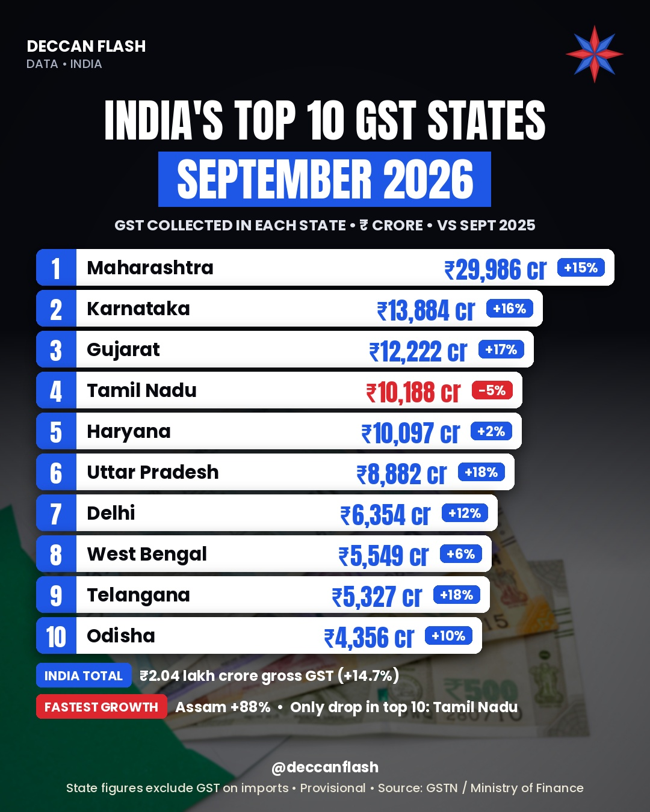

Tax · India
Which states collect the most GST?
₹2.04 lakh croreIndia's gross GST in September 2026, up 14.7% in a year
Maharashtra collected ₹29,986 crore of GST in September 2026, more than Karnataka and Gujarat combined. Tamil Nadu was the only top-10 state where collections fell, while Assam grew fastest at 88%.
Top 10 states by GST collection, September 2026
₹ crore, domestic collection (excludes GST on imports). Provisional.
State ranking
| # | State | Sept 2026 | vs Sept 2025 |
|---|---|---|---|
| 1 | Maharashtra | ₹29,986 cr | +15% |
| 2 | Karnataka | ₹13,884 cr | +16% |
| 3 | Gujarat | ₹12,222 cr | +17% |
| 4 | Tamil Nadu | ₹10,188 cr | −5% |
| 5 | Haryana | ₹10,097 cr | +2% |
| 6 | Uttar Pradesh | ₹8,882 cr | +18% |
| 7 | Delhi | ₹6,354 cr | +12% |
| 8 | West Bengal | ₹5,549 cr | +6% |
| 9 | Telangana | ₹5,327 cr | +18% |
| 10 | Odisha | ₹4,356 cr | +10% |
| 11 | Andhra Pradesh | ₹3,599 cr | +6% |
| 12 | Kerala | ₹3,328 cr | +11% |
| 13 | Madhya Pradesh | ₹3,198 cr | +5% |
| 14 | Punjab | ₹2,549 cr | +18% |
| 15 | Jharkhand | ₹2,456 cr | +4% |
| 16 | Assam | ₹2,415 cr | +88% |
Telangana is highlighted. State figures do not add up to the national total because GST on imports (₹65,525 crore in September 2026) is counted separately.

Quick answers
Which state collects the highest GST in India?
Maharashtra, with ₹29,986 crore in September 2026, up 15% from a year earlier.
How much GST did India collect in September 2026?
₹2,03,521 crore gross, up 14.7%. Net of refunds it was ₹1,76,520 crore, up 18.1%.
Where does Telangana rank?
9th, with ₹5,327 crore in September 2026, up 18%. Andhra Pradesh was 11th with ₹3,599 crore, up 6%.